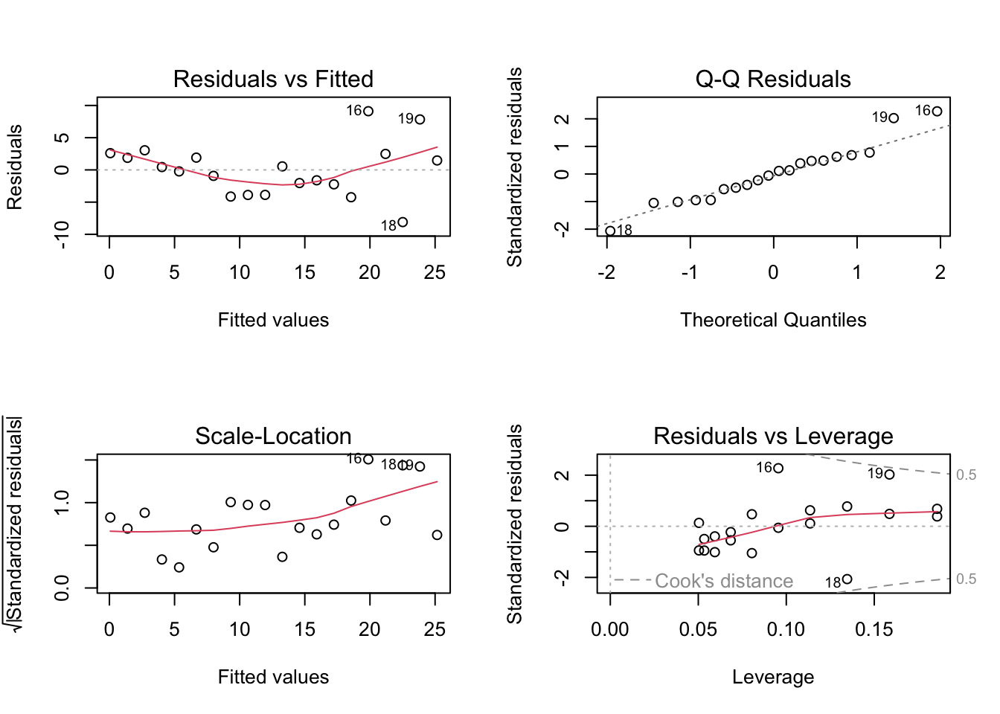
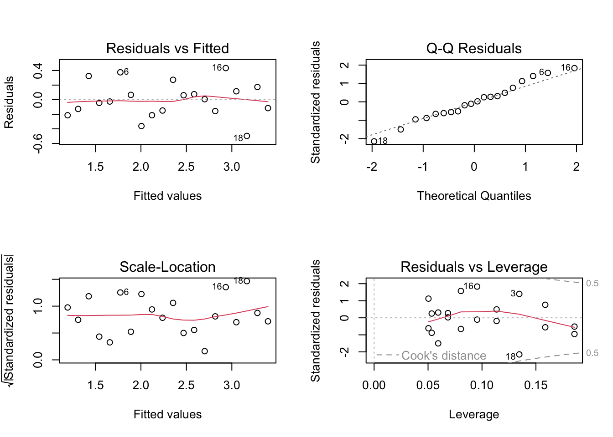
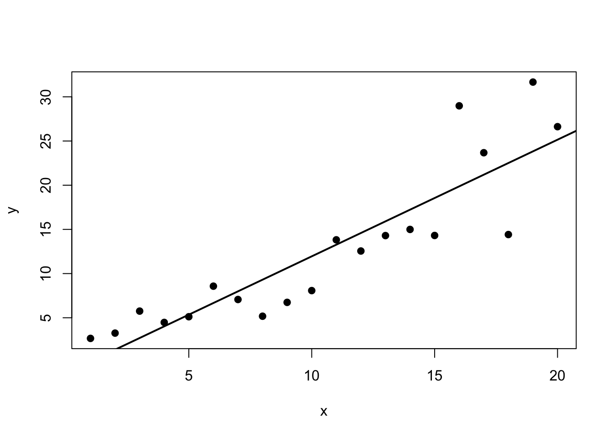
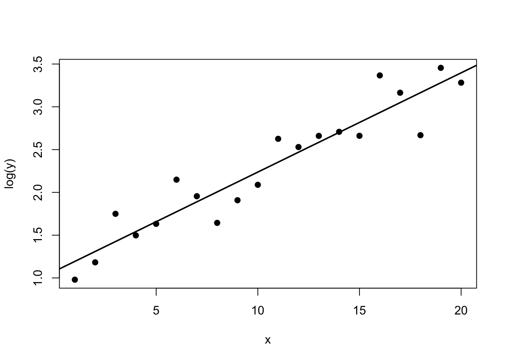
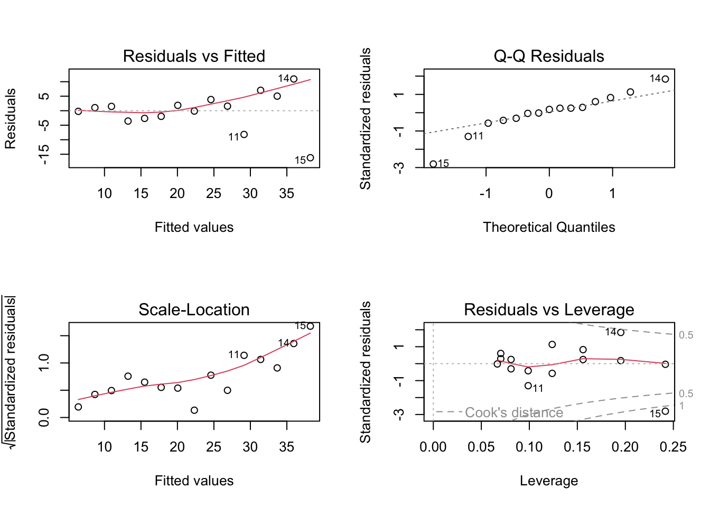
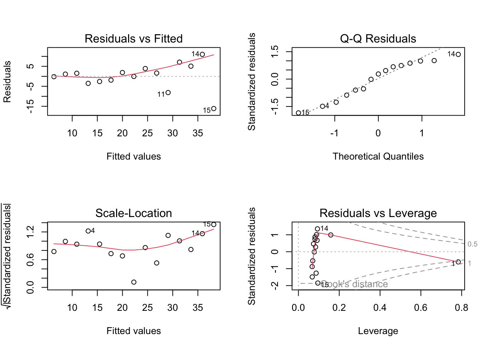
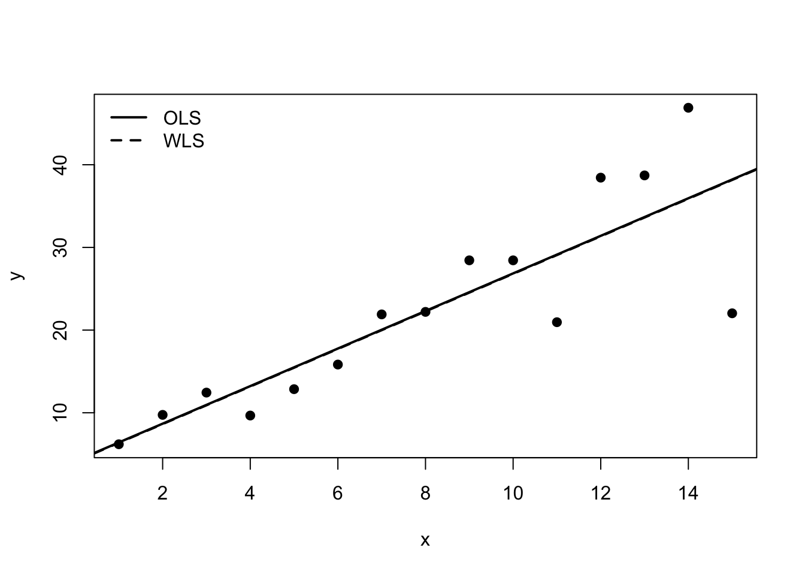
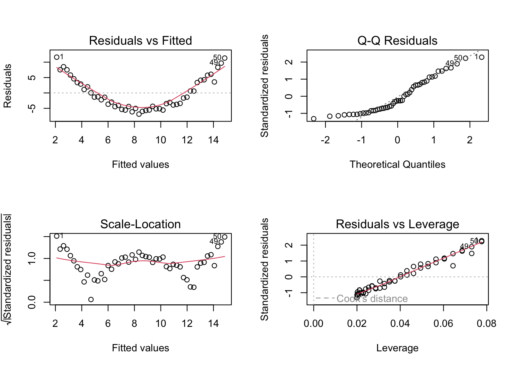
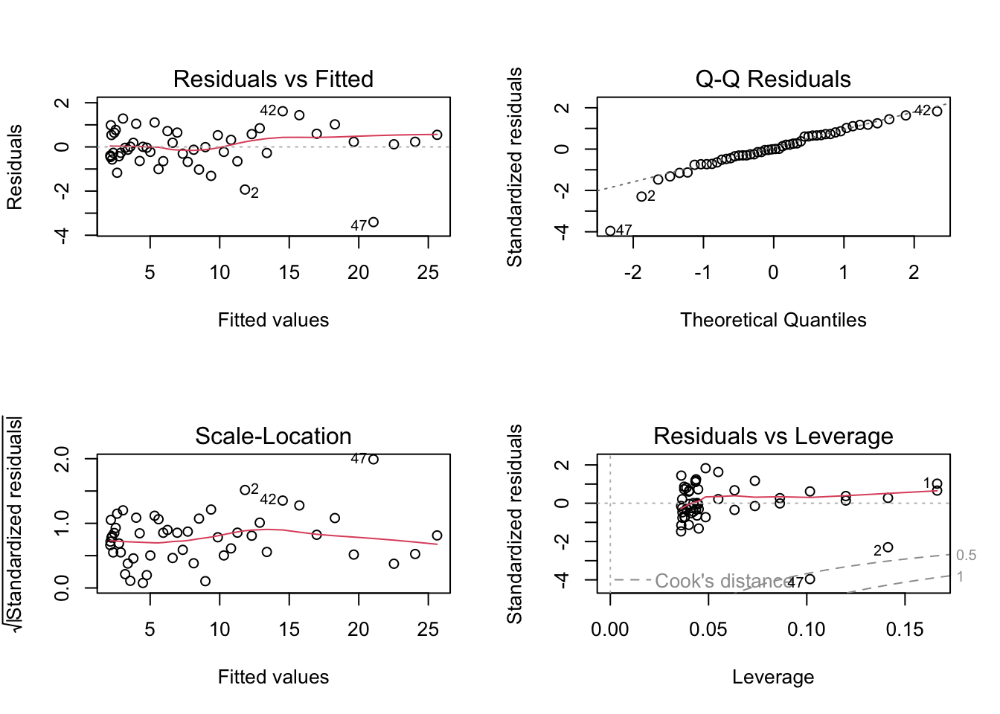

set.seed(123)
x <- seq(1, 20, by = 1)
y <- exp(1 + 0.12 * x + rnorm(length(x), sd = 0.25))
dat <- data.frame(x = x, y = y)
fit_raw <- lm(y ~ x, data = dat)
fit_log <- lm(log(y) ~ x, data = dat)8 Week 7: Transformations, Weighted Least Squares, and Remedial Measures
In this week, we study what to do when the assumptions of the ordinary linear model are not adequate. Building on residual analysis and diagnostics from the previous week, we now consider practical remedies for nonlinearity, nonconstant variance, and other violations of model assumptions. The emphasis is on understanding when transformations help, how weighted least squares works, and how to think systematically about model improvement.
8.1 Learning Objectives
By the end of this week, students should be able to:
- explain why transformations are used in regression analysis;
- distinguish between transforming the response and transforming predictors;
- interpret common response transformations such as logarithms and square roots;
- explain the basic idea of weighted least squares;
- derive the weighted least squares estimator;
- recognize situations where weighted least squares is appropriate;
- compare model improvement strategies based on diagnostics and scientific context.
8.2 Reading
Recommended reading for this week:
8.3 Why Remedies Are Needed
Diagnostics often reveal that a fitted linear model is inadequate.
Common problems include:
- curvature in the mean structure;
- nonconstant error variance;
- skewed response distributions;
- influential observations;
- omitted interactions or nonlinear effects.
When this happens, we should not stop at saying the model is flawed. We should also ask how the model might be improved.
Some common remedies are:
- transforming the response;
- transforming predictors;
- adding polynomial or interaction terms;
- using weighted least squares;
- reconsidering the scope of the scientific question.
8.4 Review of the Ordinary Linear Model
The ordinary linear regression model is
\[ \mathbf{Y} = \mathbf{X}\boldsymbol{\beta} + \boldsymbol{\varepsilon}, \qquad \mathbb{E}[\boldsymbol{\varepsilon}] = \mathbf{0}, \qquad \mathrm{Var}(\boldsymbol{\varepsilon}) = \sigma^2 \mathbf{I}_n. \]
The ordinary least squares estimator is
\[ \hat{\boldsymbol{\beta}} = (\mathbf{X}^\top \mathbf{X})^{-1}\mathbf{X}^\top \mathbf{Y}, \]
provided that \(\mathbf{X}\) has full column rank.
When the variance is not constant, or when the mean structure is poorly represented by a linear form, OLS may still be computable, but its interpretation and inferential properties can become unsatisfactory.
8.5 Transformations in Regression
A transformation changes the scale on which a variable is analysed.
For example:
- logarithm;
- square root;
- reciprocal;
- power transformation.
Transformations are often used for one or more of the following reasons:
- to improve linearity;
- to stabilize variance;
- to reduce skewness;
- to make the model more scientifically interpretable;
- to reduce the impact of extreme values.
Transformations should not be viewed as purely mechanical. They should be guided by diagnostics and by substantive understanding of the problem.
8.6 Transforming the Response
Suppose the original response is \(Y\), but instead of modelling \(Y\) directly, we model
\[ g(Y) \]
for some transformation \(g\).
Then the model becomes
\[ g(Y_i) = \beta_0 + \beta_1 x_{i1} + \cdots + \beta_p x_{ip} + \varepsilon_i. \]
This can help if the original relationship between the mean and the predictors is nonlinear, or if the variability of \(Y\) changes with its level.
8.7 Log Transformation of the Response
A very common choice is the logarithm:
\[ \log(Y_i) = \beta_0 + \beta_1 x_i + \varepsilon_i. \]
This is often useful when:
- the response is positive;
- the variance increases with the mean;
- the relationship is multiplicative rather than additive;
- the response distribution is right-skewed.
In this model, the interpretation of coefficients changes.
If \(x\) increases by one unit, then the expected log response changes by \(\beta_1\). On the original scale, this corresponds approximately to a multiplicative change.
More precisely, if
\[ \log(Y_i) = \beta_0 + \beta_1 x_i + \varepsilon_i, \]
then increasing \(x\) by one unit multiplies the fitted median response approximately by
\[ e^{\beta_1}. \]
8.8 Square-Root Transformation
Another common response transformation is the square root:
\[ \sqrt{Y_i} = \beta_0 + \beta_1 x_i + \varepsilon_i. \]
This is often used for count-like responses or responses whose variance tends to increase with the mean.
Compared with the log transformation, the square-root transformation is milder and can still be used when the response includes zeros.
8.9 Reciprocal and Other Power Transformations
In some settings, transformations such as
\[ \frac{1}{Y}, \qquad Y^\lambda \]
or more general Box-Cox type power transformations may be useful.
These transformations can sometimes help linearize relationships or stabilize variance, but they may make interpretation more difficult. So one should balance statistical convenience and interpretability.
8.10 Transforming Predictors
Instead of transforming the response, we may transform one or more predictors.
For example, if the relationship between \(Y\) and \(x\) is curved, we might consider
- \(\log(x)\);
- \(\sqrt{x}\);
- \(x^2\) or higher-order polynomial terms.
A model such as
\[ Y_i = \beta_0 + \beta_1 \log(x_i) + \varepsilon_i \]
is still linear in the parameters, even though it is nonlinear in the original predictor.
This is an important distinction: the model remains a linear model as long as it is linear in the coefficients.
8.11 Polynomial Terms as a Remedy
Suppose residual plots suggest curvature in the relationship between \(Y\) and \(x\).
A common remedy is to add a quadratic term:
\[ Y_i = \beta_0 + \beta_1 x_i + \beta_2 x_i^2 + \varepsilon_i. \]
This is still a linear model because it is linear in \(\beta_0\), \(\beta_1\), and \(\beta_2\).
Polynomial terms often provide a more interpretable remedy than transforming the response, depending on the scientific context.
8.12 Choosing Between Transformations and Added Terms
Suppose diagnostics show nonlinearity.
Then several remedies may be reasonable:
- transform the predictor;
- transform the response;
- add polynomial terms;
- include an interaction;
- restrict attention to a smaller range of the data.
There is often no single automatic answer. Choice depends on:
- what shape is suggested by diagnostics;
- which form is scientifically meaningful;
- how easy the resulting model is to explain;
- whether inference or prediction is the main goal.
8.13 Heteroscedasticity and Variance Stabilization
A common problem in regression is heteroscedasticity, meaning that
\[ \mathrm{Var}(\varepsilon_i) \]
is not constant across observations.
Residual plots may reveal a funnel shape or changing spread.
Sometimes a response transformation can reduce this problem.
For example:
- a log transformation often helps when the standard deviation is roughly proportional to the mean;
- a square-root transformation often helps for count-like data.
But in other cases, it is better to model the unequal variance directly. This leads to weighted least squares.
8.14 Weighted Least Squares
Suppose the observations still satisfy
\[ \mathbb{E}[\mathbf{Y}] = \mathbf{X}\boldsymbol{\beta}, \]
but now the variance is
\[ \mathrm{Var}(\mathbf{Y}) = \sigma^2 \mathbf{V}, \]
where \(\mathbf{V}\) is not the identity matrix.
A particularly common case is when the errors are uncorrelated but have unequal variances:
\[ \mathrm{Var}(\varepsilon_i) = \sigma^2 v_i. \]
Then observations have different levels of reliability.
Ordinary least squares treats all observations equally. Weighted least squares gives more weight to observations with smaller variance.
8.15 Basic Idea of Weights
If an observation has high variance, it contains less precise information about the mean.
If an observation has low variance, it contains more precise information.
So a sensible idea is to weight observations inversely to their variance.
If
\[ \mathrm{Var}(\varepsilon_i) = \sigma^2 v_i, \]
then we often use weights
\[ w_i = \frac{1}{v_i}. \]
Larger weights correspond to more precise observations.
8.16 Weighted Least Squares Criterion
In weighted least squares, we minimize
\[ Q(\boldsymbol{\beta}) = \sum_{i=1}^n w_i (Y_i - x_i^\top \boldsymbol{\beta})^2. \]
In matrix form, if
\[ \mathbf{W} = \mathrm{diag}(w_1,\dots,w_n), \]
then the criterion is
\[ Q(\boldsymbol{\beta}) = (\mathbf{Y} - \mathbf{X}\boldsymbol{\beta})^\top \mathbf{W} (\mathbf{Y} - \mathbf{X}\boldsymbol{\beta}). \]
This is the weighted analogue of the ordinary residual sum of squares.
8.17 Derivation of the Weighted Least Squares Estimator
Differentiate the weighted criterion with respect to \(\boldsymbol{\beta}\) and set the derivative equal to zero.
The weighted normal equations are
\[ \mathbf{X}^\top \mathbf{W}\mathbf{X}\,\hat{\boldsymbol{\beta}}_{WLS} = \mathbf{X}^\top \mathbf{W}\mathbf{Y}. \]
Assuming invertibility, the weighted least squares estimator is
\[ \hat{\boldsymbol{\beta}}_{WLS} = (\mathbf{X}^\top \mathbf{W}\mathbf{X})^{-1}\mathbf{X}^\top \mathbf{W}\mathbf{Y}. \]
This has exactly the same structural form as OLS, but with \(\mathbf{W}\) inserted to reflect unequal precision.
8.18 Transformation View of Weighted Least Squares
Weighted least squares can also be understood as transforming the model.
If \(\mathbf{W}^{1/2}\) is the diagonal matrix with entries \(\sqrt{w_i}\), then multiplying the model by \(\mathbf{W}^{1/2}\) gives
\[ \mathbf{W}^{1/2}\mathbf{Y} = \mathbf{W}^{1/2}\mathbf{X}\boldsymbol{\beta} + \mathbf{W}^{1/2}\boldsymbol{\varepsilon}. \]
If the weights are chosen appropriately, the transformed errors have constant variance, and ordinary least squares on the transformed system becomes appropriate.
This is a very useful conceptual link between WLS and OLS.
8.19 Interpreting Weighted Least Squares
Weighted least squares does not change the target mean model
\[ \mathbb{E}[\mathbf{Y}] = \mathbf{X}\boldsymbol{\beta}. \]
Instead, it changes how observations are used in estimation.
Observations with smaller variance have more influence on the fitted coefficients.
Thus WLS is often best viewed as a remedy for unequal precision rather than a new mean model.
8.20 When Weighted Least Squares Is Appropriate
Weighted least squares is particularly useful when:
- variance is known up to a proportional constant;
- variance can be reasonably modelled as a function of the mean or a predictor;
- observations are averages based on different sample sizes;
- some observations are measured more precisely than others.
For example, if each response is an average based on \(m_i\) repeated measurements, then the variance may be proportional to \(1/m_i\), so weights proportional to \(m_i\) are natural.
8.21 Feasible Weighted Least Squares
In many applications, the variances are not known exactly.
Instead, we estimate the variance pattern from the data and then use estimated weights. This is often called feasible weighted least squares.
Typical workflow:
- fit an initial OLS model;
- inspect residuals to understand how variance changes;
- propose a variance model;
- compute estimated weights;
- refit using WLS.
This approach is practical, though it introduces additional modelling decisions.
8.22 Example of a Mean-Variance Relationship
Suppose residual plots suggest
\[ \mathrm{Var}(Y_i) \propto x_i^2. \]
Then it may be appropriate to use weights
\[ w_i = \frac{1}{x_i^2}. \]
Alternatively, dividing the model through by \(x_i\) may also lead to a transformed model with approximately constant variance.
This illustrates the close connection between variance modelling and transformation.
8.23 Response Transformation Versus WLS
Both response transformation and WLS can address heteroscedasticity, but they do so differently.
A response transformation changes the scale of the response and often changes interpretation.
Weighted least squares keeps the response on its original scale, but changes the estimation procedure.
Which is better depends on the context.
Students should compare:
- interpretability;
- adequacy of the residual plots after refitting;
- scientific plausibility of the variance model.
8.24 Practical Caveats
No remedy should be applied blindly.
Questions to ask include:
- Does the transformed model make scientific sense?
- Does the transformed scale improve diagnostics meaningfully?
- Are the chosen weights justified?
- Does a more flexible mean model explain the apparent variance pattern?
- Would a different modelling framework be more appropriate?
Model repair is not merely technical. It should remain connected to the original scientific problem.
8.25 Worked Example With a Log Transformation
Suppose the response increases rapidly with the predictor and residual plots show larger spread for larger fitted values.
A model for the original scale may look like
\[ Y_i = \beta_0 + \beta_1 x_i + \varepsilon_i, \]
but the diagnostics suggest increasing variance and curvature.
We might instead fit
\[ \log(Y_i) = \beta_0 + \beta_1 x_i + \varepsilon_i. \]
If the transformed residual plots look more stable and more linear, then the log model may be preferable.
Interpretation then becomes multiplicative rather than additive.
8.26 Worked Example With Weighted Least Squares
Suppose we observe responses with variance increasing as the predictor grows.
If residual analysis suggests
\[ \mathrm{Var}(Y_i) \propto x_i^2, \]
then we may fit a weighted model with weights
\[ w_i = \frac{1}{x_i^2}. \]
This gives lower weight to high-variance observations and can produce more stable coefficient estimates and more appropriate standard errors.
8.27 R Demonstration With a Log Transformation
8.28 Generate heteroscedastic data
8.29 Compare the fitted models
summary(fit_raw)
Call:
lm(formula = y ~ x, data = dat)
Residuals:
Min 1Q Median 3Q Max
-8.0995 -2.6491 0.1043 2.0486 9.1089
Coefficients:
Estimate Std. Error t value Pr(>|t|)
(Intercept) -1.2531 1.9582 -0.640 0.53
x 1.3205 0.1635 8.078 2.13e-07 ***
---
Signif. codes: 0 '***' 0.001 '**' 0.01 '*' 0.05 '.' 0.1 ' ' 1
Residual standard error: 4.215 on 18 degrees of freedom
Multiple R-squared: 0.7838, Adjusted R-squared: 0.7718
F-statistic: 65.25 on 1 and 18 DF, p-value: 2.134e-07summary(fit_log)
Call:
lm(formula = log(y) ~ x, data = dat)
Residuals:
Min 1Q Median 3Q Max
-0.49698 -0.15070 -0.00942 0.12985 0.43338
Coefficients:
Estimate Std. Error t value Pr(>|t|)
(Intercept) 1.077523 0.115500 9.329 2.57e-08 ***
x 0.115989 0.009642 12.030 4.85e-10 ***
---
Signif. codes: 0 '***' 0.001 '**' 0.01 '*' 0.05 '.' 0.1 ' ' 1
Residual standard error: 0.2486 on 18 degrees of freedom
Multiple R-squared: 0.8894, Adjusted R-squared: 0.8832
F-statistic: 144.7 on 1 and 18 DF, p-value: 4.848e-108.30 Diagnostic plots for the untransformed model
par(mfrow = c(2, 2))
plot(fit_raw)
par(mfrow = c(1, 1))8.31 Diagnostic plots for the log-transformed model
par(mfrow = c(2, 2))
plot(fit_log)
par(mfrow = c(1, 1))8.32 Plot data on original and transformed scales
plot(dat$x, dat$y, pch = 19, xlab = "x", ylab = "y")
abline(fit_raw, lwd = 2)
plot(dat$x, log(dat$y), pch = 19, xlab = "x", ylab = "log(y)")
abline(fit_log, lwd = 2)
8.33 R Demonstration With Weighted Least Squares
8.34 Generate data with variance increasing in x
set.seed(456)
x2 <- seq(1, 15, by = 1)
y2 <- 5 + 2 * x2 + rnorm(length(x2), sd = 0.6 * x2)
dat2 <- data.frame(x = x2, y = y2)
fit_ols <- lm(y ~ x, data = dat2)
fit_wls <- lm(y ~ x, data = dat2, weights = 1 / x^2)8.35 Compare summaries
summary(fit_ols)
Call:
lm(formula = y ~ x, data = dat2)
Residuals:
Min 1Q Median 3Q Max
-16.190 -2.291 1.063 2.853 10.942
Coefficients:
Estimate Std. Error t value Pr(>|t|)
(Intercept) 4.1385 3.6015 1.149 0.271
x 2.2723 0.3961 5.736 6.86e-05 ***
---
Signif. codes: 0 '***' 0.001 '**' 0.01 '*' 0.05 '.' 0.1 ' ' 1
Residual standard error: 6.628 on 13 degrees of freedom
Multiple R-squared: 0.7168, Adjusted R-squared: 0.695
F-statistic: 32.91 on 1 and 13 DF, p-value: 6.862e-05summary(fit_wls)
Call:
lm(formula = y ~ x, data = dat2, weights = 1/x^2)
Weighted Residuals:
Min 1Q Median 3Q Max
-1.0753 -0.4167 0.1633 0.4726 0.7858
Coefficients:
Estimate Std. Error t value Pr(>|t|)
(Intercept) 4.0940 0.6638 6.167 3.39e-05 ***
x 2.2713 0.2155 10.541 9.73e-08 ***
---
Signif. codes: 0 '***' 0.001 '**' 0.01 '*' 0.05 '.' 0.1 ' ' 1
Residual standard error: 0.6107 on 13 degrees of freedom
Multiple R-squared: 0.8953, Adjusted R-squared: 0.8872
F-statistic: 111.1 on 1 and 13 DF, p-value: 9.732e-088.36 Compare diagnostic plots
par(mfrow = c(2, 2))
plot(fit_ols)
par(mfrow = c(1, 1))par(mfrow = c(2, 2))
plot(fit_wls)
par(mfrow = c(1, 1))8.37 Plot fitted lines
plot(dat2$x, dat2$y, pch = 19, xlab = "x", ylab = "y")
abline(fit_ols, lwd = 2)
abline(fit_wls, lwd = 2, lty = 2)
legend("topleft",
legend = c("OLS", "WLS"),
lty = c(1, 2),
lwd = 2,
bty = "n")
8.38 Example With a Quadratic Remedy for Curvature
set.seed(789)
x3 <- seq(-3, 3, length.out = 50)
y3 <- 3 + 2 * x3 + 1.8 * x3^2 + rnorm(length(x3), sd = 1)
dat3 <- data.frame(x = x3, y = y3)
fit_lin <- lm(y ~ x, data = dat3)
fit_quad <- lm(y ~ x + I(x^2), data = dat3)
summary(fit_lin)
Call:
lm(formula = y ~ x, data = dat3)
Residuals:
Min 1Q Median 3Q Max
-6.891 -4.391 -1.388 3.994 11.626
Coefficients:
Estimate Std. Error t value Pr(>|t|)
(Intercept) 8.4756 0.7498 11.30 3.94e-15 ***
x 2.1258 0.4243 5.01 7.79e-06 ***
---
Signif. codes: 0 '***' 0.001 '**' 0.01 '*' 0.05 '.' 0.1 ' ' 1
Residual standard error: 5.302 on 48 degrees of freedom
Multiple R-squared: 0.3434, Adjusted R-squared: 0.3297
F-statistic: 25.1 on 1 and 48 DF, p-value: 7.79e-06summary(fit_quad)
Call:
lm(formula = y ~ x + I(x^2), data = dat3)
Residuals:
Min 1Q Median 3Q Max
-3.4044 -0.4148 -0.0022 0.5909 1.6173
Coefficients:
Estimate Std. Error t value Pr(>|t|)
(Intercept) 2.74823 0.19245 14.28 <2e-16 ***
x 2.12581 0.07258 29.29 <2e-16 ***
I(x^2) 1.83425 0.04595 39.92 <2e-16 ***
---
Signif. codes: 0 '***' 0.001 '**' 0.01 '*' 0.05 '.' 0.1 ' ' 1
Residual standard error: 0.9069 on 47 degrees of freedom
Multiple R-squared: 0.9812, Adjusted R-squared: 0.9804
F-statistic: 1226 on 2 and 47 DF, p-value: < 2.2e-16anova(fit_lin, fit_quad)Analysis of Variance Table
Model 1: y ~ x
Model 2: y ~ x + I(x^2)
Res.Df RSS Df Sum of Sq F Pr(>F)
1 48 1349.18
2 47 38.66 1 1310.5 1593.4 < 2.2e-16 ***
---
Signif. codes: 0 '***' 0.001 '**' 0.01 '*' 0.05 '.' 0.1 ' ' 18.39 Compare diagnostic plots for linear and quadratic fits
par(mfrow = c(2, 2))
plot(fit_lin)
par(mfrow = c(1, 1))par(mfrow = c(2, 2))
plot(fit_quad)
par(mfrow = c(1, 1))8.40 Interpreting Software Output
Useful commands in R include:
lm(..., weights = ...)for weighted least squares;plot(fit)for standard diagnostic plots;anova(fit1, fit2)for comparing nested mean models;predict()for fitted values on the chosen modelling scale.
Students should always keep track of the scale on which the model is fitted. This is especially important when the response is transformed.
8.41 A Practical Remedy Workflow
A useful workflow after diagnostics is:
- identify the main problem from residual analysis;
- decide whether the issue concerns the mean structure, the variance structure, or both;
- try a scientifically reasonable remedy;
- refit the model;
- compare diagnostics before and after the change;
- interpret the new model on the correct scale.
This encourages disciplined model improvement rather than ad hoc trial and error.
8.42 In-Class Discussion Questions
- When is a response transformation preferable to adding polynomial terms?
- How does the interpretation of coefficients change under a log transformation?
- Why does weighted least squares downweight high-variance observations?
- Why should model remedies be guided by both diagnostics and subject-matter knowledge?
8.43 Practice Problems
8.44 Conceptual
- Explain the difference between transforming the response and transforming a predictor.
- Explain why a log transformation may help when the variance grows with the mean.
- Explain why weighted least squares can be viewed as ordinary least squares on a transformed system.
8.45 Computational
Suppose a regression model has
\[ \mathrm{Var}(\varepsilon_i) = \sigma^2 x_i^2. \]
- What weights would be natural for weighted least squares?
- Which observations receive the largest weights?
- Why do these weights make sense?
Now suppose the fitted model is
\[ \log(Y_i) = 1.5 + 0.2x_i. \]
- What is the fitted log response when \(x_i = 3\)?
- What is the fitted value on the original response scale if you exponentiate the fitted mean?
- Why should interpretation on the original scale be made carefully?
8.46 Model-Improvement Problem
A residual-versus-fitted plot shows both a curved pattern and increasing spread.
- What kinds of model inadequacy does this suggest?
- Name two possible remedies.
- How would you decide which remedy is more appropriate?
8.47 Suggested Homework
Complete the following tasks:
- fit a regression model that shows heteroscedasticity or curvature;
- apply one response transformation and assess whether the diagnostics improve;
- fit a weighted least squares model with a justified set of weights;
- compare OLS and WLS fits both numerically and graphically;
- write a short discussion explaining which remedy you prefer and why.
8.48 Summary
In this week, we studied practical remedies for model inadequacy in linear regression.
We focused on:
- transforming the response or predictors;
- using polynomial terms to address curvature;
- stabilizing variance through transformation;
- using weighted least squares when error variances differ across observations;
- comparing alternative remedies using diagnostics and interpretation.
These ideas help students move from model criticism to model improvement.
Next week, a natural continuation is to study multicollinearity, variable selection, and model-building strategies, or to move into generalized least squares and correlated errors, depending on the course emphasis.
8.49 Appendix: Compact Formula Summary
Response transformation model:
\[ g(Y_i) = x_i^\top \boldsymbol{\beta} + \varepsilon_i. \]
Weighted least squares criterion:
\[ Q(\boldsymbol{\beta}) = (\mathbf{Y} - \mathbf{X}\boldsymbol{\beta})^\top \mathbf{W} (\mathbf{Y} - \mathbf{X}\boldsymbol{\beta}). \]
Weighted least squares estimator:
\[ \hat{\boldsymbol{\beta}}_{WLS} = (\mathbf{X}^\top \mathbf{W}\mathbf{X})^{-1}\mathbf{X}^\top \mathbf{W}\mathbf{Y}. \]
Typical diagnostic questions after a remedy:
- Is the mean structure more adequate?
- Is the variance more stable?
- Is interpretation still meaningful?
- Does the new model answer the scientific question well?